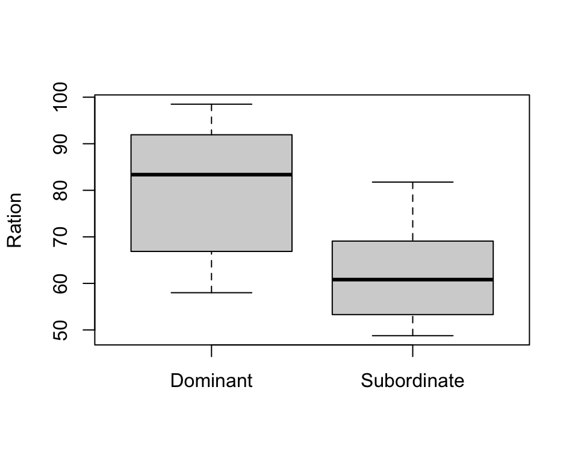
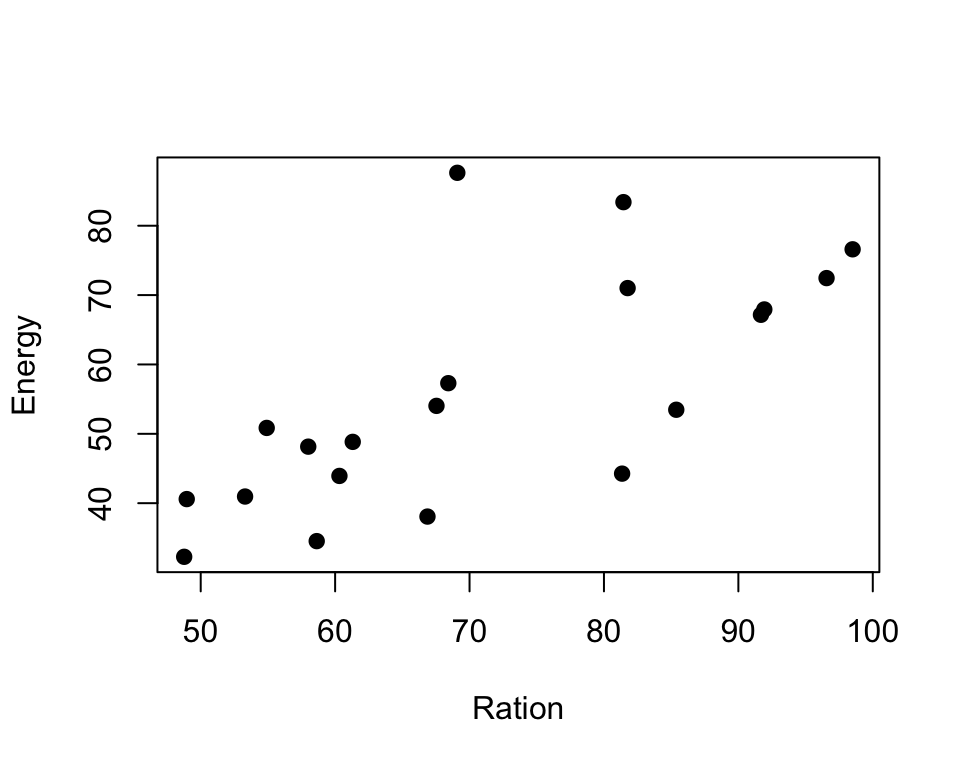
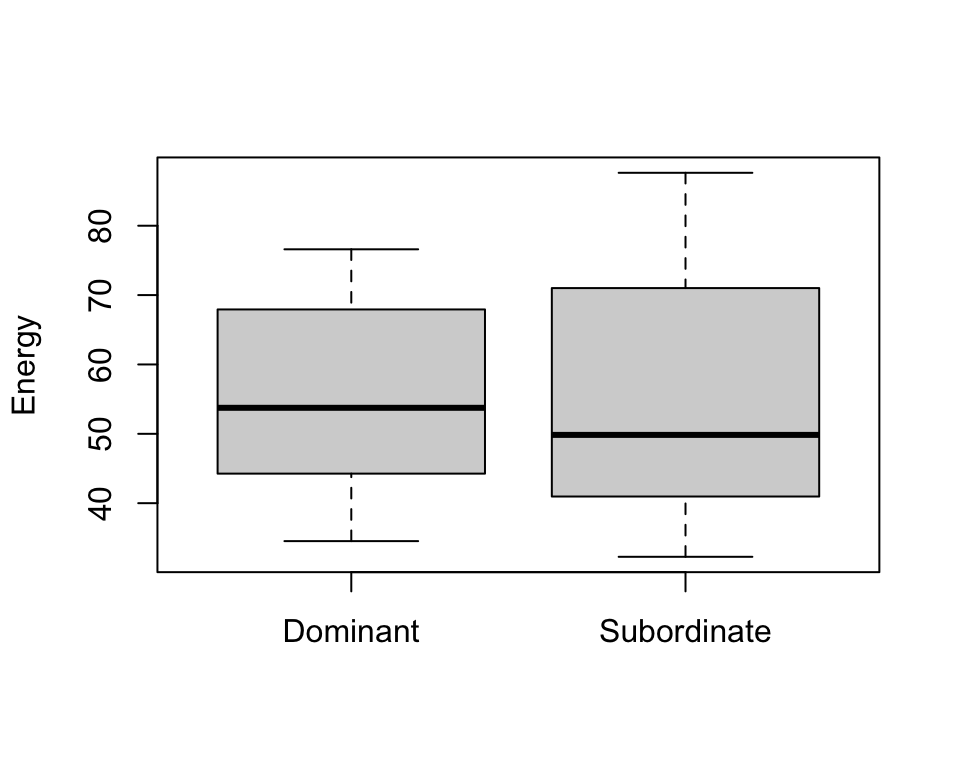

Chapter 11 recode the Group variable and treat like categories (factor)
trout\(Group <- factor(trout\)Group, labels=c(“Dominant”, “Subordinate”))
trout\(Group <- factor(trout\)Group, labels=c(“Dominant”, “Subordinate”))
daga Exr. 9.1
htwtgen <- read.csv("data/lm/heights_weights_genders.csv")
head(htwtgen)
## Gender Height Weight
## 1 Male 73.84702 241.8936
## 2 Male 68.78190 162.3105
## 3 Male 74.11011 212.7409
## 4 Male 71.73098 220.0425
## 5 Male 69.88180 206.3498
## 6 Male 67.25302 152.2122
# a)
model1 <- lm(Height ~ Gender, data = htwtgen)
model2 <- lm(Height ~ Gender + Weight, data = htwtgen)
model3 <- lm(Height ~ Gender * Weight, data = htwtgen)
# print(summary(model1))
# print(summary(model2))
# print(summary(model3))use equations to find the height for men and women respectively: \[E(height|male\; and \; weight=x)=47.34778 - 1.68367 + 0.12043x + 0.00449x = 45.7 + 0.125x\] \[E(height|female\; and \; weight=x)=47.34778 + 0.12043x\]
# for men
new.obs <- data.frame(Weight=120, Gender="Male")
predict(model3, newdata = new.obs)
## 1
## 60.65427
# for female
new.obs <- data.frame(Weight=120, Gender="Female")
predict(model3, newdata = new.obs)
## 1
## 61.79882# read in data and show preview
trout <- read.csv("data/lm/trout.csv")
# recode the Group variable and treat like categories (factor)
trout$Group <- factor(trout$Group, labels=c("Dominant", "Subordinate"))
head(trout)
## Energy Ration Group
## 1 44.26 81.35 Dominant
## 2 67.16 91.68 Dominant
## 3 48.15 58.00 Dominant
## 4 34.53 58.63 Dominant
## 5 67.93 91.93 Dominant
## 6 72.45 96.56 Dominant
# plot data
# boxplots of Energy and Ration per group
boxplot(trout$Energy ~ trout$Group, xlab="", ylab="Energy")
boxplot(trout$Ration ~ trout$Group, xlab="", ylab="Ration")
# scatter plot of Ration vs. Energy
plot(trout$Ration, trout$Energy, pch=19, xlab="Ration", ylab="Energy")
# Is there a relationship between ration obtained and energy expenditure
model1 <- lm(Energy ~ Ration, data = trout)
print(summary(model1))
##
## Call:
## lm(formula = Energy ~ Ration, data = trout)
##
## Residuals:
## Min 1Q Median 3Q Max
## -18.704 -4.703 -0.578 2.432 33.506
##
## Coefficients:
## Estimate Std. Error t value Pr(>|t|)
## (Intercept) 4.3037 12.5156 0.344 0.734930
## Ration 0.7211 0.1716 4.203 0.000535 ***
## ---
## Signif. codes: 0 '***' 0.001 '**' 0.01 '*' 0.05 '.' 0.1 ' ' 1
##
## Residual standard error: 12.05 on 18 degrees of freedom
## Multiple R-squared: 0.4953, Adjusted R-squared: 0.4673
## F-statistic: 17.66 on 1 and 18 DF, p-value: 0.0005348
# from the regression output we can see that yes, a unit increase in ratio increase energy expenditure by 0.72
# Is there a relationship between ration obtained and energy expenditure different for each type of fish?
# we first check if there is a group effect
model2 <- lm(Energy ~ Ration + Group, data = trout)
print(summary(model2))
##
## Call:
## lm(formula = Energy ~ Ration + Group, data = trout)
##
## Residuals:
## Min 1Q Median 3Q Max
## -13.130 -5.139 -0.870 2.199 25.622
##
## Coefficients:
## Estimate Std. Error t value Pr(>|t|)
## (Intercept) -24.8506 13.3031 -1.868 0.07910 .
## Ration 1.0109 0.1626 6.218 9.36e-06 ***
## GroupSubordinate 17.0120 5.1075 3.331 0.00396 **
## ---
## Signif. codes: 0 '***' 0.001 '**' 0.01 '*' 0.05 '.' 0.1 ' ' 1
##
## Residual standard error: 9.647 on 17 degrees of freedom
## Multiple R-squared: 0.6946, Adjusted R-squared: 0.6587
## F-statistic: 19.33 on 2 and 17 DF, p-value: 4.182e-05
ggPredict(model2)
# and whether there is interaction effect
model3 <- lm(Energy ~ Ration * Group, data = trout)
print(summary(model3))
##
## Call:
## lm(formula = Energy ~ Ration * Group, data = trout)
##
## Residuals:
## Min 1Q Median 3Q Max
## -12.7951 -6.0981 -0.1554 3.9612 23.5946
##
## Coefficients:
## Estimate Std. Error t value Pr(>|t|)
## (Intercept) -9.2330 15.9394 -0.579 0.570483
## Ration 0.8149 0.1968 4.141 0.000767 ***
## GroupSubordinate -18.9558 22.6934 -0.835 0.415848
## Ration:GroupSubordinate 0.5200 0.3204 1.623 0.124148
## ---
## Signif. codes: 0 '***' 0.001 '**' 0.01 '*' 0.05 '.' 0.1 ' ' 1
##
## Residual standard error: 9.214 on 16 degrees of freedom
## Multiple R-squared: 0.7378, Adjusted R-squared: 0.6886
## F-statistic: 15 on 3 and 16 DF, p-value: 6.537e-05
ggPredict(model3)
Based on the regression output and plots we can say: